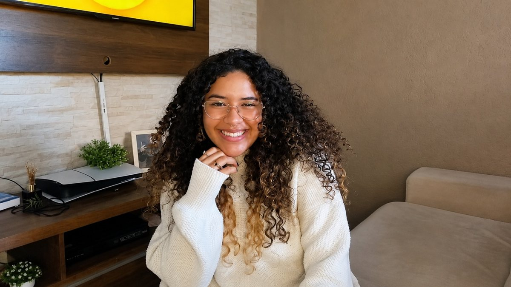

2024 — 2025
Jovem Aprendiz · Recursos Humanos
Experiência administrativa em RH Generalista na Eurofarma, com contato com rotinas da área, ferramentas de escritório e sistema SAP.
Entre pessoas, ideias e possibilidades — uma trajetória em construção que conecta Psicologia, atendimento, organização e criatividade.

Sou estudante de Psicologia e uma pessoa movida pela curiosidade sobre gente, comportamento e as diferentes formas de transformar ideias em algo útil.
Minha experiência profissional passa pelo atendimento ao público e por rotinas administrativas de Recursos Humanos. Fora desse contexto, gosto de explorar a comunicação visual e criar conteúdos que aproximem temas da Psicologia do dia a dia.
Este espaço reúne o que já vivi, o que estou aprendendo e os caminhos que quero investigar. Não é uma história pronta — é um retrato honesto de uma profissional em formação.
Cada experiência acrescentou uma nova perspectiva sobre pessoas, processos e o jeito como nos comunicamos.
Experiência administrativa em RH Generalista na Eurofarma, com contato com rotinas da área, ferramentas de escritório e sistema SAP.
Uma formação que amplia meu interesse por comportamento humano, relações, contextos de cuidado e possibilidades de atuação em diferentes áreas.
Atuação com acolhimento e orientação ao público, cadastros, fichas, apoio ao fluxo de atendimento e rotinas administrativas em um ambiente dinâmico.
Criação de conteúdos para Instagram com foco em temas de Psicologia, autocuidado e autoconhecimento, explorando a união entre informação e linguagem visual.
Clique nos ramos do mapa para explorar áreas que despertam minha curiosidade. São interesses em desenvolvimento — não especializações ou qualificações já concluídas.
Investigar como as pessoas usam produtos e serviços, compreender suas necessidades e transformar descobertas em experiências mais claras, acessíveis e úteis. Interessa-me a conexão entre comportamento humano, pesquisa e tecnologia.
Uma seleção inicial de frentes que podem mostrar meu jeito de pesquisar, organizar e comunicar. Projetos conceituais estão identificados como propostas, não como trabalhos já concluídos.
Publicações para Instagram que apresentam temas de Psicologia e bem-estar em uma linguagem acessível, com atenção à responsabilidade na comunicação.
Adicionar exemplos reais das publicaçõesProposta de checklist visual para organizar etapas de integração de novos colaboradores e tornar informações importantes mais fáceis de acompanhar.
Projeto futuro — ainda a desenvolverProposta de mapa de jornada para explorar dúvidas, pontos de contato e oportunidades de melhoria em um serviço fictício de atendimento.
Projeto futuro — sem dados reais de pacientesProjeto de aprendizagem para aproximar minha formação em Psicologia da pesquisa com usuários: estudar fundamentos, formular perguntas de pesquisa e mapear a jornada de uma experiência digital fictícia, identificando necessidades e oportunidades de melhoria.
Em construção — próxima etapa: definir o problema e o plano de pesquisaCompetências que fazem parte da minha experiência atual e interesses que quero aprofundar com prática e estudo.
As áreas identificadas como interesse representam caminhos de desenvolvimento, não certificações profissionais.
Estou aberta a conhecer oportunidades, trocar experiências e colaborar em projetos que se conectem à minha trajetória e aos meus interesses.